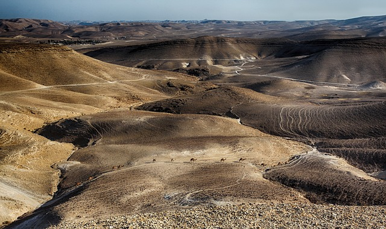
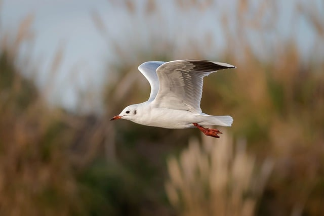
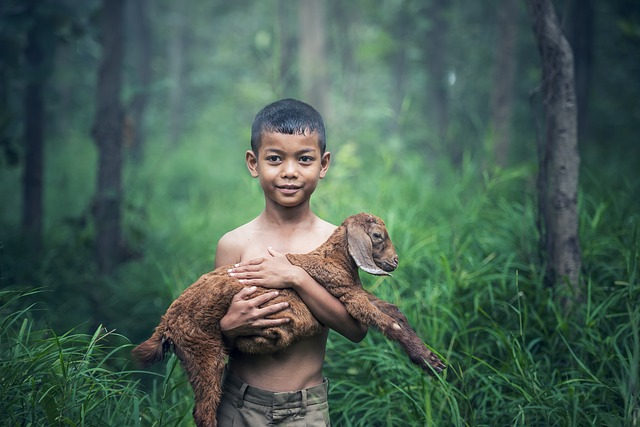
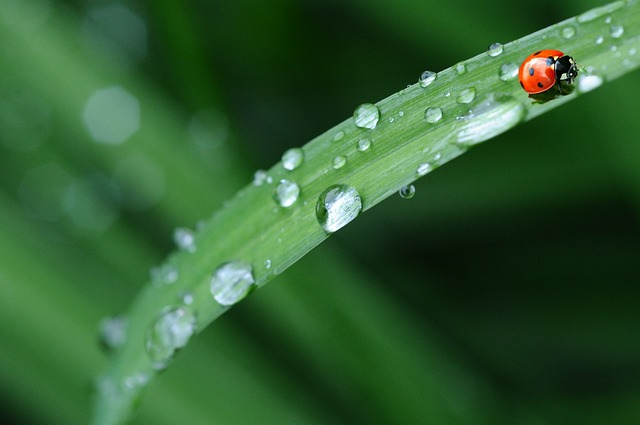
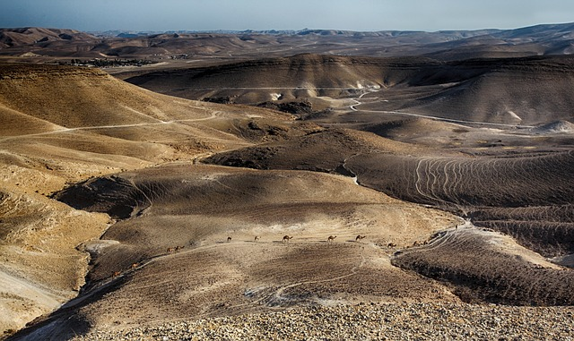
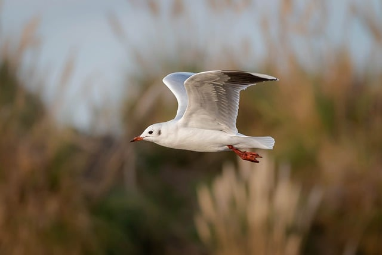
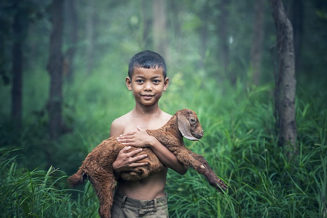
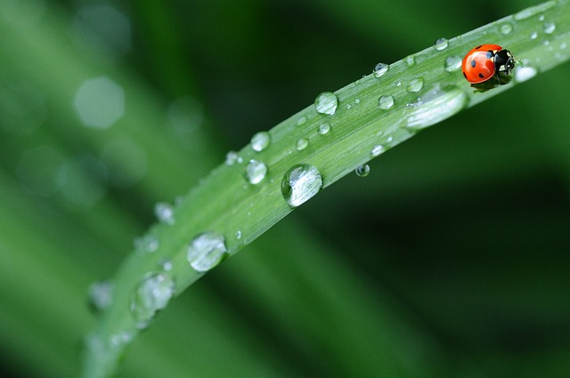

about me
Photography is not just about capturing a particular image, it is about showing the emotions associated with it. If you manage to convey your feelings in a photograph, then you can call your work art.
Read more about Sophy
journal
Germination
To take that one perfect photo, you need to take several thousand of them. If you can dream it, you can do it. Patience, perseverance and sweat create an unbeatable combination for success. The best way to succeed is to follow the advice we give to others.
Read moreLight
When deciding to take photographs in difficult conditions, such as at night, it is certainly worth knowing that excellent results can also be achieved by using the appropriate accessories, which will certainly make it easier to take many of the photographs you have planned. One such accessory will undoubtedly be a tripod. This sturdy piece of equipment will ensure that even in poor lighting conditions, your hand will not tremble for a moment. Sounds great, doesn't it?
Read more
Catch a movement
Sometimes we do not want to freeze the action in the frame, but on the contrary to show something in the photo that the naked eye will not see, to "accumulate time". A classic example of a motif worth photographing with long shutter speeds is nature - above all because it is in constant motion.
Read moreportfolio

 






